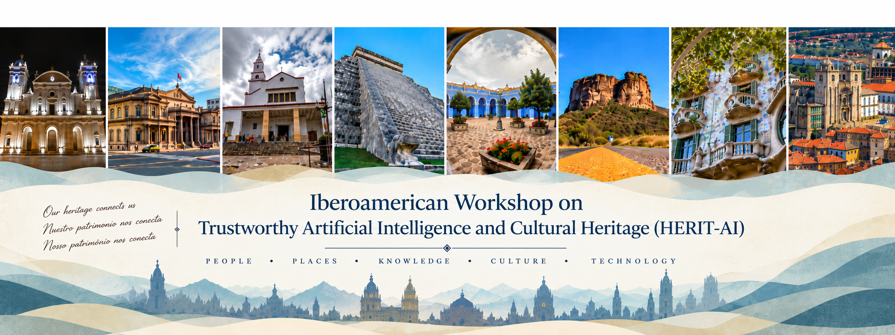
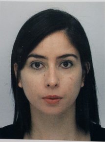

“Life is not what one lived, but what one remembers and how one remembers it in order to recount it.”
— Gabriel García Márquez, Living to Tell the Tale (2002).
ABOUT THE WORKSHOP
Cultural heritage embodies the history, traditions, identity, and collective memories of communities. Through its tangible and intangible manifestations, it preserves the cultural legacy of societies while fostering the transmission of knowledge, values, and practices across generations. As such, it plays a fundamental role in strengthening cultural identity, supporting education, and promoting social and historical awareness. Ultimately, cultural heritage is about preserving human memory, ensuring that the stories, knowledge, and values that define societies remain accessible to present and future generations.
Recent advances in Artificial Intelligence (AI) are creating new opportunities for documenting, preserving, analyzing, interpreting, managing, and disseminating cultural heritage. However, the use of AI in Cultural Heritage also raises significant risks and challenges. AI systems may reflect and reinforce biases, cultural stereotypes, or imbalances present in the data used to train them. In light of these challenges, HERIT-AI aims to bring together AI researchers and professionals from museums, archives, libraries, archaeology, conservation, digital humanities, and other Cultural Heritage institutions to foster interdisciplinary collaboration and knowledge exchange. Beyond original research papers, the workshop will provide a forum for discussing real-world experiences, case studies, pilot projects, and ongoing initiatives involving the adoption of AI in Cultural Heritage.
The vision of HERIT-AI is to build an Ibero-American community where Artificial Intelligence and Cultural Heritage evolve together. By encouraging dialogue, co-creation, and interdisciplinary collaboration, the workshop seeks not only to advance AI applications for cultural heritage, but also to inspire the development of a more human-centered, trustworthy, and socially meaningful Artificial Intelligence through one of humanity’s most valuable domains.
CALL FOR PAPERS
Types of Contributions
- Full Research Papers (up to 15 pages, including references). Original research contributions presenting novel methods, approaches, systems, or empirical results at the intersection of Trustworthy AI and Cultural Heritage.
- Short Research Papers (up to 10 pages, including references). Contributions presenting a clearly defined research problem and an emerging or work-in-progress scientific contribution, including preliminary methods, results, or findings.
- Blue-sky Ideas (up to 10 pages, including references). Innovative ideas, emerging research directions, conceptual approaches, and visions for the future of Trustworthy AI and Cultural Heritage.
- Emerging Contributions (up to 4 pages, including references). Early-stage ideas, preliminary projects, prototypes, datasets, demonstrations, case studies, or emerging initiatives. Accepted contributions will be presented as physical posters.
Topics of interest
- Intelligent digitization, documentation, and long-term preservation of cultural heritage assets.
- Computer vision techniques for artwork analysis, object recognition, image retrieval, damage assessment, and virtual reconstruction.
- Natural language processing and large language models for historical documents, archives, multilingual collections, and cultural knowledge extraction.
- Knowledge representation, knowledge graphs, semantic technologies, and reasoning for modeling and integrating cultural heritage information.
- Explainable, trustworthy, and responsible AI for supporting decision-making in museums, archives, libraries, and heritage institutions.
- AI-assisted conservation, restoration, monitoring, and risk assessment of cultural heritage.
- Generative AI and digital storytelling for education, interpretation, and public engagement.
- AI-supported visitor experiences, personalization, accessibility, and inclusive cultural participation.
- Ethical, legal, organizational, and societal challenges associated with the adoption of AI in Cultural Heritage.
- Real-world deployments, case studies, interdisciplinary collaborations, and evaluation methodologies for AI systems in heritage contexts.
- Misinformation, disinformation, and inaccurate, biased, or misleading narratives in AI-generated and AI-assisted representations of cultural heritage.
- FAIR principles (Findable, Accessible, Interoperable, Reusable) for complex datasets, ensuring long-term access to historical and social data.
- AI-Ready Archives: Structuring historical archives and cultural data so modern artificial intelligence tools can process them effectively.
Submission Guidelines
- Languages: English, Spanish, and Portuguese. For submissions in Spanish or Portuguese, an abstract in English should also be provided.
- Format: Submissions should follow the Springer LNCS format.
- Submission: Papers should be submitted electronically through Easychair using the the HERIT-AI 2026 submission system.
- Review Process: All submissions will undergo a single-blind peer-review process.
- Use of Artificial Intelligence: AI-generated papers are not permitted. Authors must disclose any use of AI tools in the preparation of their submission, including the tools used and the purpose of their use. The substantive scientific content, ideas, analysis, and conclusions of the paper must be the authors' own work.
Proceedings
- Accepted papers will be included in the workshop on-line proceedings.
- At least one author of each accepted paper is expected to register to the workshop and attend the workshop to present the paper.
- The best papers will be invited to submit extended and revised versions for publication in a journal of the Ibero-American Society of Artificial Intelligence (IBERAMIA), provided that a sufficient number of high-quality papers is collected. Selected papers will go through a second formal selection and review process to meet the quality standards of the journal.
IMPORTANT DATES
-
Papers Submission deadline:
October 18, 2026 -
Notification of acceptance:
November 3, 2026November 6, 2026 - Workshop: November 17, 2026
KEYNOTES
Keynote speakers
We are happy to announce that we have two keynote speakers:
Prof. Laurie Alice Vera Jiménez
Laurie Vera is an architect, researcher, and professor at the Faculty of Architecture, Design, and Arts of the National University of Asunción (FADA-UNA). She graduated from FADA-UNA and has a Master's degree in History, Civilizations, and Heritage, with specialization in "City, Architecture, and Heritage" (VAP) from Paris-Cité University and the National School of Architecture Paris-Vallée de la Seine (UPC-ENSAPVS). Besides, she holds a diploma in Latin American Studies and Master 1 in "Social Sciences of Latin America" from the Institute of Advanced Studies on Latin America at the Sorbonne Nouvelle (IHEAL).
Title: Can artificial intelligence understand a landscape?
Abstract
Integrating artificial intelligence into the field of cultural heritage opens up new possibilities for documenting, researching, interpreting, and managing assets, landscapes, and memories. However, it also raises a fundamental question: what heritage do we make visible when we convert it into data, and what knowledge, relationships, and voices might be left out of that process?
Drawing on research into the historic centers of San Lorenzo and Areguá in Paraguay, this presentation proposes shifting the focus from heritage understood as a collection of objects toward a relational conception—one in which architecture, nature, territory, memory, cultural practices, and communities form an inseparable web.
From this perspective, the presentation examines the potential of AI to connect scattered heritage information, document oral histories, analyze territorial transformations, and contribute to new forms of museum mediation. At the same time, it addresses challenges related to data bias, cultural representation, language, sovereignty over sensitive information, and community governance.
Ultimately, the proposal advocates for moving toward a heritage AI capable of contributing to the continuity of heritage without replacing the interpretive and decision-making capacities of the communities that sustain it.
Prof. Marvin Agüero Torales
Marvin Matías Agüero-Torales is a Paraguayan computer scientist and researcher specializing in Natural Language Processing (NLP), machine learning (ML), and Artificial Intelligence (AI) for low-resource languages. He holds a PhD in Information and Communication Technologies from the University of Granada, Spain, where his doctoral research focused on topic and sentiment analysis in multilingual opinions, including Guarani and Jopara. Precisely, his research addresses the development and evaluation of language technologies for Guarani and Jopara, spanning parallel corpora, semantic resources, or language models. He is involved in GuaranIA, an initiative promoting open AI resources and technologies for Paraguayan Guarani, and in collaborative efforts to strengthen Indigenous-language NLP, including work associated with the Lacuna Fund, the National University of Itapúa (UNI), and Universidad de la República (UdelaR). His research interests also encompass the AmericasNLP community and multilingual evaluation, including GUA-SPA or INCLUDE-2.0. His work seeks to advance more inclusive and culturally grounded AI systems that better reflect the linguistic diversity and knowledge of low-resource languages communities.
Title: From Language Resources to Cultural Knowledge: Building AI for Guarani and Beyond
Abstract
Language is more than a means of communication: it carries collective memory, cultural knowledge, and ways of understanding the world. Yet, Indigenous and other underrepresented languages remain poorly represented in many AI systems, raising important questions about linguistic equity, cultural representation, and whose knowledge becomes accessible in the digital age.
This talk explores the challenges and opportunities of developing AI for Guarani, drawing on research and practical experience across language resources, natural language processing, or multilingual evaluation. It begins with foundational work on Guarani and Guarani–Spanish (Jopara) language technologies, including parallel corpora, machine translation, semantic resources, or the analysis of code-switching in Jopara. It then discusses collaborative efforts to expand the digital resources available for Guarani, including initiatives associated with the Lacuna Fund, the National University of Itapúa (UNI), Universidad de la República (UdelaR), and GuaranIA, which seeks to foster the development of open language resources, models, and applications.
The presentation also examines broader efforts to advance Indigenous-language technologies through AmericasNLP, including research on machine translation, grammar generation or culturally grounded image captioning. In addition, it considers multilingual evaluation initiatives such as GUA-SPA or INCLUDE-2.0 and the challenge of determining whether AI systems can represent regional knowledge and cultural context, rather than simply generate linguistically plausible responses.
These experiences illustrate a central tension in the development of AI and cultural heritage: making a language available to AI does not necessarily mean that its cultural meanings, linguistic variation, and associated knowledge are adequately represented. Data scarcity, dialectal diversity, code-switching, and other limitations, drive the lack of culturally meaningful evaluation methods all influence what AI systems can learn and communicate.
The talk argues for an approach to inclusive and trustworthy AI that goes beyond collecting data or developing language models. Through the case of Guarani, it reflects on how AI can support cultural transmission while respecting the knowledge, agency, and diversity of the communities that sustain it.
ORGANIZATION
Organizing Committee
-
Juan Carlos Nieves
(Umeå University), Website -
Mariela Morveli Espinoza
(Umeå University), Website -
Ulises Cortés
(Universitat Politècnica de Catalunya), Website
Program Committee
PROGRAMME
Workshop programme
The programme will be published after the review process.
REGISTRATION
Registration for the HERIT-AI 2026 workshop is free of charge. To participate, please complete the registration form using the following link. .
We look forward to your participation!VENUE
Where will HERIT-AI 2026 take place?
Please note that IBERAMIA 2026 and its workshops will be held at different venues.
HERIT-AI 2026 — Workshop
17 November 2026
Facultad Politécnica
Universidad Nacional de Asunción (UNA)
Campus de la UNA
San Lorenzo, Paraguay
IBERAMIA 2026 — Main Conference
18–20 November 2026
Facultad de Ciencias y Tecnología
Campus Santa Librada
Universidad Católica “Nuestra Señora de la Asunción” (UCA)
Asunción, Paraguay
Join the HERIT-AI community
For questions and collaboration opportunities, please contact the workshop organisers.
Contact us →